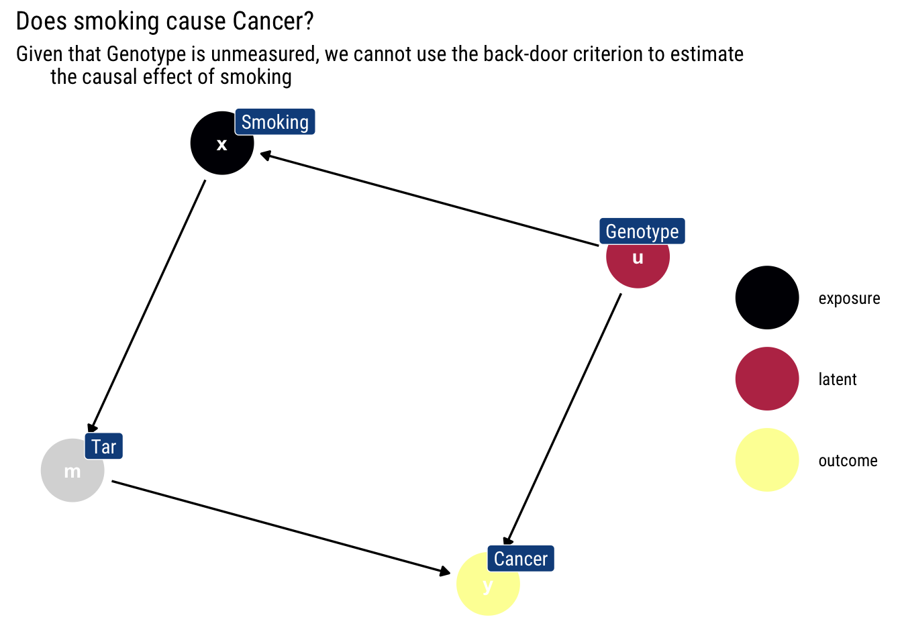
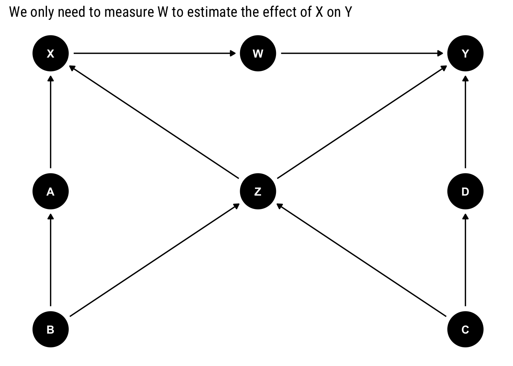
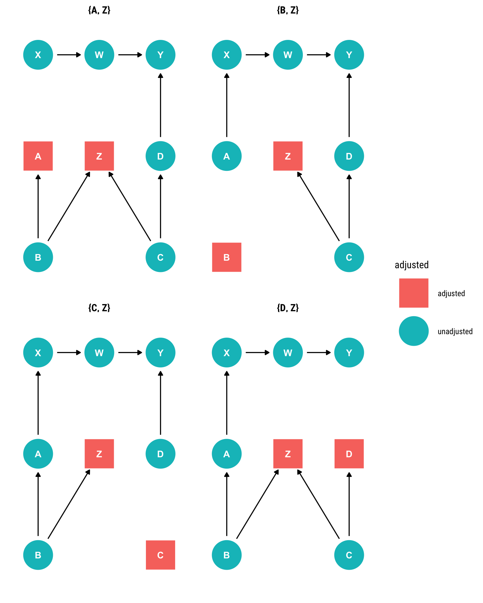
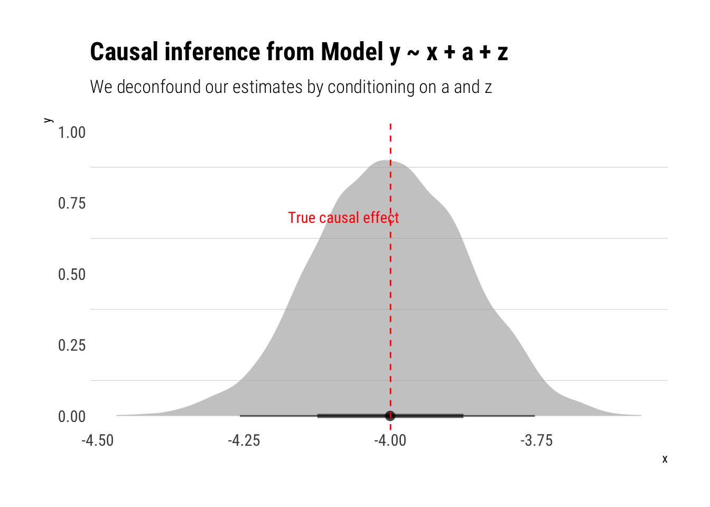
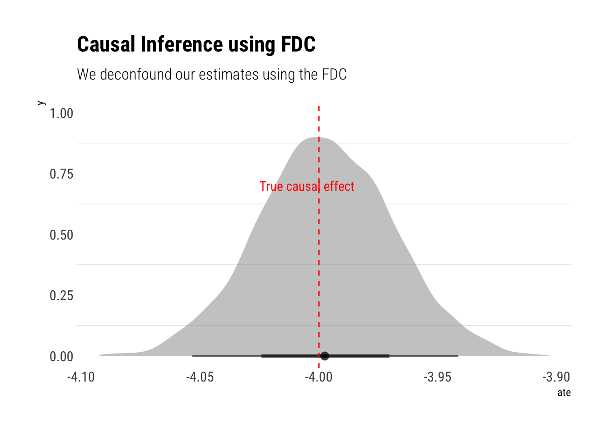

example <- dagify(x ~ u,
m ~ x,
y ~ u + m,
labels = c("x" = "Smoking",
"y" = "Cancer",
"m" = "Tar",
"u" = "Genotype"),
latent = "u",
exposure = "x",
outcome = "y")Motivation
In a past blogpost, I’ve explore the backdoor criterion: a simple graphical algorithm, we can define which variables we must include in our analysis in order to cancel out all the information coming from different causal relationships than the one we are interested. However, these variables are not always measured. What else can we do?
In this blogpost, I’ll explore the front-door criterion: i) an intuitive proof of why it works; (ii) how to estimate it; (iii) what are its fundamental assumptions; finally, (iv) an experiment with monte-carlo samples. Whereas the back-door criterion blocks all the non-causal information that \(X\) could possibly pick up, the front-door exploits the outgoing information from \(X\) to derive a causal estimator.
The limits of the back-door: a quick example
Let’s assume the following DAG, which is a darling of Pearl’s work. Does smoking cause cancer?

Given that we cannot measure genotype, we cannot use the back-door criterion to stop \(Smoking\) from picking up the causal effect of \(Genotype\). Therefore, one can not use the back-door criterion to ascertain which portion of the observed association between smoking and cancer is spurious (because it is attributable to their common cause, Genotype) and what portion is genuinely causative.
Consecutive applications of the back-door criterion
However, we notice that we can use the back-door criterion to estimate two partial effects: \(X \rightarrow M\) and \(M \rightarrow Y\). By chaining these two partial effects, we can obtain the overall effect \(X \rightarrow Y\).
The intuition for the chaining is thus: intervening on the levels of tar in the lungs lead to different probabilities of cancer: \(P(Y = y | \text{do(M = m)})\). However, the levels of tar are themselves determined by how much someone smokes: \(P(M= m| \text{do(X = x)})\). Therefore, by intervening on smoking to determine the levels of tar we can estimate the causal effect of smoking.
We intervene on smoking and check the respective effect for each value of tar:
\[ P(Y \mid d o(X))=\sum_{M} P(Y \mid M, d o(X)) \times P(M \mid d o(X)) \]
Because smoking blocks all the back-door paths from tar into cancer, we can replace the conditioning expression by an intervention expression in the first term.\(P(Y \mid M, d o(X))=P(Y \mid d o(M), d o(X))\). Given that intervening on smoking, once we have intervened on tar has no effect on cancer, we can also write \(P(Y \mid M, d o(X))=P(Y \mid d o(M), d o(X))=P(Y \mid d o(M))\).
Given that smoking blocks all backdoor paths into tar, we can estimate \(P(Y \mid d o(M))\) using the back-door adjustment:
\[ P(Y \mid d o(M))=\sum_{X} P(Y \mid X, M) \times P(X) \]
Therefore, we can re-write \(P(Y \mid d o(X))\) thus:
\[ P(Y \mid d o(X)) = \sum_{M} P(M | do(X)) \sum_{X'} P(Y \mid X', M) \times P(X') \]
Considering that there are no backdoor paths from smoking to tar, we can write \(P(M | do(X)) = P(M | X)\). Therefore, we can re-write our entire expression for \(P(Y \mid d o(X))\) in terms of pre-intervention probabilities:
\[ P(Y \mid d o(X)) = \sum_{M} P(M | X) \sum_{X'} P(Y \mid X', M) \times P(X') \]
This is the front-door formula.
Empirical estimation
the FDC [Front-door Criterion] approach works by first estimating the effect of X on M, and then estimating the effect of M on Y holding X constant. Both of these effects are unbiased because nothing confounds the effect of X on M and X blocks the only back-door path between M on Y. Multiplying these effects by one another yields the FDC estimand.
Therefore, in a regression setting we can estimate the causal effect using the Average Treatment Effect (ATE) via the FDC thus. Formulate two linear regressions:
[ M_{i}=+X_{i}+{i} ] and [ Y{i}=+M_{i}+X_{i}+v_{i} ]
Our estimate of the ATE is given by:
\[ ATE = E[Y|do(X)] = \delta \times \gamma \]
When can we use the Front-Door criterion?
We’ve given an intuitive proof of the Front-door criterion and given an empirical estimation technique. But what exactly have we presupposed that allowed us to do all of this? In other words, what are the fundamental assumptions behind the criterion?
A set of variables ( Z ) is said to satisfy the front-door criterion relative to an ordered pair of variables ( (X, Y) ) if:
Z intercepts all directed paths from ( X ) to ( Y ).
There is no backdoor path from ( X ) to ( Z )
All backdoor paths from Z to ( Y ) are blocked by X.
When these conditions are met, we can use the Front-Door criterion to estimate the causal effect of \(X\).
A Monte-Carlo experiment
Let’s work a Monte-Carlo experiment to show the power of the backdoor criterion. Consider the following DAG:
dag <- downloadGraph("dagitty.net/m331")
ggdag(dag) +
labs(title = "We only need to measure W to estimate the effect of X on Y")
Assume that only \(X, Y\), and one additional variable can be measured. Which variable would would allow the identification of the causal effect \(X\) on \(Y\)? The answer is all in the front-door criterion! We only need to measure \(W\) to be able to estimate the effect. Notice that:
\(W\) intercepts all the direct paths from \(X\) into \(Y\).
There is no backdoor path from \(X\) into \(W\).
All back-door paths from \(W\) into \(Y\) are blocked
Therefore, we can use the front-door criterion.
Let’s use a Monte-Carlo simulation to confirm the answer.
n <- 500
b <- rnorm(n)
c <- rnorm(n)
z <- -2*b +2*c + rnorm(n)
a <- 3*b + rnorm(n)
d <- -3*c + rnorm(n)
x <- 4+a +2*z + rnorm(n)
w <- -2*x + rnorm(n)
y <- z + 2*w + d + rnorm(n)
data <- data.frame(b, c, z, a, d, x, w, y)In this simulated dataset, the causal effect of unit of \(X\) on \(Y\) is -4. Let’s recuperate this effect by using the back-door criterion to find out for which variables we must control.
ggdag_adjustment_set(dag, outcome = "Y", exposure = "X")
Let’s take the first adjustment set.
model_backdoor <- stan_glm(y ~ x + a + z, data = data, refresh = 0)
model_backdoor %>%
spread_draws(x) %>%
ggplot(aes(x)) +
stat_halfeye(alpha = 0.6) +
hrbrthemes::theme_ipsum_rc(grid = "y") +
geom_vline(aes(xintercept = -4), linetype = 2, color = "red") +
annotate("text", x = -4.08, y = 0.7, label = "True causal effect", color = "red",
family = theme_get()$text[["family"]]) +
labs(title = "Causal inference from Model y ~ x + a + z",
subtitle = "We deconfound our estimates by conditioning on a and z")
Given our DAG, a testable implication is that we must arrive at the same answer by using the front-door criterion. Remember that it is just a consecutive use of the back-door criterion that translates into two regressions. Therefore, we can use a multi-variable model thus:
model_frontdoor <- ulam(
alist(
c(Y, W) ~ multi_normal(c(muY, muW), Rho, Sigma),
muY <- alphaY + delta*W,
muW <- alphaW + gamma*X,
gq> ate <- gamma * delta, # calculate ate directly in stan
c(alphaY, alphaW) ~ normal(0, 0.2),
c(gamma, delta) ~ normal(0, 0.5),
Rho ~ lkj_corr(2),
Sigma ~ exponential(1)
),
data = list(Y = data$y, X = data$x, W = data$w), chains = 4, cores = 4, iter = 3000
)Running MCMC with 4 parallel chains, with 1 thread(s) per chain...
Chain 1 Iteration: 1 / 3000 [ 0%] (Warmup)
Chain 2 Iteration: 1 / 3000 [ 0%] (Warmup)
Chain 3 Iteration: 1 / 3000 [ 0%] (Warmup)
Chain 4 Iteration: 1 / 3000 [ 0%] (Warmup)
Chain 3 Iteration: 100 / 3000 [ 3%] (Warmup)
Chain 1 Iteration: 100 / 3000 [ 3%] (Warmup)
Chain 4 Iteration: 100 / 3000 [ 3%] (Warmup)
Chain 2 Iteration: 100 / 3000 [ 3%] (Warmup)
Chain 3 Iteration: 200 / 3000 [ 6%] (Warmup)
Chain 1 Iteration: 200 / 3000 [ 6%] (Warmup)
Chain 4 Iteration: 200 / 3000 [ 6%] (Warmup)
Chain 2 Iteration: 200 / 3000 [ 6%] (Warmup)
Chain 3 Iteration: 300 / 3000 [ 10%] (Warmup)
Chain 1 Iteration: 300 / 3000 [ 10%] (Warmup)
Chain 4 Iteration: 300 / 3000 [ 10%] (Warmup)
Chain 2 Iteration: 300 / 3000 [ 10%] (Warmup)
Chain 3 Iteration: 400 / 3000 [ 13%] (Warmup)
Chain 4 Iteration: 400 / 3000 [ 13%] (Warmup)
Chain 1 Iteration: 400 / 3000 [ 13%] (Warmup)
Chain 2 Iteration: 400 / 3000 [ 13%] (Warmup)
Chain 1 Iteration: 500 / 3000 [ 16%] (Warmup)
Chain 3 Iteration: 500 / 3000 [ 16%] (Warmup)
Chain 4 Iteration: 500 / 3000 [ 16%] (Warmup)
Chain 2 Iteration: 500 / 3000 [ 16%] (Warmup)
Chain 3 Iteration: 600 / 3000 [ 20%] (Warmup)
Chain 1 Iteration: 600 / 3000 [ 20%] (Warmup)
Chain 4 Iteration: 600 / 3000 [ 20%] (Warmup)
Chain 2 Iteration: 600 / 3000 [ 20%] (Warmup)
Chain 1 Iteration: 700 / 3000 [ 23%] (Warmup)
Chain 3 Iteration: 700 / 3000 [ 23%] (Warmup)
Chain 4 Iteration: 700 / 3000 [ 23%] (Warmup)
Chain 2 Iteration: 700 / 3000 [ 23%] (Warmup)
Chain 1 Iteration: 800 / 3000 [ 26%] (Warmup)
Chain 3 Iteration: 800 / 3000 [ 26%] (Warmup)
Chain 4 Iteration: 800 / 3000 [ 26%] (Warmup)
Chain 2 Iteration: 800 / 3000 [ 26%] (Warmup)
Chain 1 Iteration: 900 / 3000 [ 30%] (Warmup)
Chain 3 Iteration: 900 / 3000 [ 30%] (Warmup)
Chain 4 Iteration: 900 / 3000 [ 30%] (Warmup)
Chain 2 Iteration: 900 / 3000 [ 30%] (Warmup)
Chain 1 Iteration: 1000 / 3000 [ 33%] (Warmup)
Chain 3 Iteration: 1000 / 3000 [ 33%] (Warmup)
Chain 4 Iteration: 1000 / 3000 [ 33%] (Warmup)
Chain 2 Iteration: 1000 / 3000 [ 33%] (Warmup)
Chain 1 Iteration: 1100 / 3000 [ 36%] (Warmup)
Chain 3 Iteration: 1100 / 3000 [ 36%] (Warmup)
Chain 4 Iteration: 1100 / 3000 [ 36%] (Warmup)
Chain 2 Iteration: 1100 / 3000 [ 36%] (Warmup)
Chain 1 Iteration: 1200 / 3000 [ 40%] (Warmup)
Chain 4 Iteration: 1200 / 3000 [ 40%] (Warmup)
Chain 3 Iteration: 1200 / 3000 [ 40%] (Warmup)
Chain 2 Iteration: 1200 / 3000 [ 40%] (Warmup)
Chain 1 Iteration: 1300 / 3000 [ 43%] (Warmup)
Chain 4 Iteration: 1300 / 3000 [ 43%] (Warmup)
Chain 3 Iteration: 1300 / 3000 [ 43%] (Warmup)
Chain 2 Iteration: 1300 / 3000 [ 43%] (Warmup)
Chain 1 Iteration: 1400 / 3000 [ 46%] (Warmup)
Chain 3 Iteration: 1400 / 3000 [ 46%] (Warmup)
Chain 4 Iteration: 1400 / 3000 [ 46%] (Warmup)
Chain 2 Iteration: 1400 / 3000 [ 46%] (Warmup)
Chain 1 Iteration: 1500 / 3000 [ 50%] (Warmup)
Chain 1 Iteration: 1501 / 3000 [ 50%] (Sampling)
Chain 3 Iteration: 1500 / 3000 [ 50%] (Warmup)
Chain 3 Iteration: 1501 / 3000 [ 50%] (Sampling)
Chain 4 Iteration: 1500 / 3000 [ 50%] (Warmup)
Chain 4 Iteration: 1501 / 3000 [ 50%] (Sampling)
Chain 2 Iteration: 1500 / 3000 [ 50%] (Warmup)
Chain 2 Iteration: 1501 / 3000 [ 50%] (Sampling)
Chain 1 Iteration: 1600 / 3000 [ 53%] (Sampling)
Chain 3 Iteration: 1600 / 3000 [ 53%] (Sampling)
Chain 4 Iteration: 1600 / 3000 [ 53%] (Sampling)
Chain 2 Iteration: 1600 / 3000 [ 53%] (Sampling)
Chain 1 Iteration: 1700 / 3000 [ 56%] (Sampling)
Chain 3 Iteration: 1700 / 3000 [ 56%] (Sampling)
Chain 4 Iteration: 1700 / 3000 [ 56%] (Sampling)
Chain 1 Iteration: 1800 / 3000 [ 60%] (Sampling)
Chain 2 Iteration: 1700 / 3000 [ 56%] (Sampling)
Chain 3 Iteration: 1800 / 3000 [ 60%] (Sampling)
Chain 4 Iteration: 1800 / 3000 [ 60%] (Sampling)
Chain 1 Iteration: 1900 / 3000 [ 63%] (Sampling)
Chain 3 Iteration: 1900 / 3000 [ 63%] (Sampling)
Chain 2 Iteration: 1800 / 3000 [ 60%] (Sampling)
Chain 4 Iteration: 1900 / 3000 [ 63%] (Sampling)
Chain 1 Iteration: 2000 / 3000 [ 66%] (Sampling)
Chain 3 Iteration: 2000 / 3000 [ 66%] (Sampling)
Chain 2 Iteration: 1900 / 3000 [ 63%] (Sampling)
Chain 4 Iteration: 2000 / 3000 [ 66%] (Sampling)
Chain 1 Iteration: 2100 / 3000 [ 70%] (Sampling)
Chain 3 Iteration: 2100 / 3000 [ 70%] (Sampling)
Chain 2 Iteration: 2000 / 3000 [ 66%] (Sampling)
Chain 4 Iteration: 2100 / 3000 [ 70%] (Sampling)
Chain 1 Iteration: 2200 / 3000 [ 73%] (Sampling)
Chain 3 Iteration: 2200 / 3000 [ 73%] (Sampling)
Chain 2 Iteration: 2100 / 3000 [ 70%] (Sampling)
Chain 4 Iteration: 2200 / 3000 [ 73%] (Sampling)
Chain 1 Iteration: 2300 / 3000 [ 76%] (Sampling)
Chain 3 Iteration: 2300 / 3000 [ 76%] (Sampling)
Chain 2 Iteration: 2200 / 3000 [ 73%] (Sampling)
Chain 4 Iteration: 2300 / 3000 [ 76%] (Sampling)
Chain 1 Iteration: 2400 / 3000 [ 80%] (Sampling)
Chain 3 Iteration: 2400 / 3000 [ 80%] (Sampling)
Chain 1 Iteration: 2500 / 3000 [ 83%] (Sampling)
Chain 2 Iteration: 2300 / 3000 [ 76%] (Sampling)
Chain 3 Iteration: 2500 / 3000 [ 83%] (Sampling)
Chain 4 Iteration: 2400 / 3000 [ 80%] (Sampling)
Chain 4 Iteration: 2500 / 3000 [ 83%] (Sampling)
Chain 1 Iteration: 2600 / 3000 [ 86%] (Sampling)
Chain 2 Iteration: 2400 / 3000 [ 80%] (Sampling)
Chain 3 Iteration: 2600 / 3000 [ 86%] (Sampling)
Chain 1 Iteration: 2700 / 3000 [ 90%] (Sampling)
Chain 2 Iteration: 2500 / 3000 [ 83%] (Sampling)
Chain 3 Iteration: 2700 / 3000 [ 90%] (Sampling)
Chain 4 Iteration: 2600 / 3000 [ 86%] (Sampling)
Chain 1 Iteration: 2800 / 3000 [ 93%] (Sampling)
Chain 2 Iteration: 2600 / 3000 [ 86%] (Sampling)
Chain 3 Iteration: 2800 / 3000 [ 93%] (Sampling)
Chain 4 Iteration: 2700 / 3000 [ 90%] (Sampling)
Chain 1 Iteration: 2900 / 3000 [ 96%] (Sampling)
Chain 3 Iteration: 2900 / 3000 [ 96%] (Sampling)
Chain 2 Iteration: 2700 / 3000 [ 90%] (Sampling)
Chain 4 Iteration: 2800 / 3000 [ 93%] (Sampling)
Chain 1 Iteration: 3000 / 3000 [100%] (Sampling)
Chain 1 finished in 13.5 seconds.
Chain 3 Iteration: 3000 / 3000 [100%] (Sampling)
Chain 3 finished in 13.6 seconds.
Chain 2 Iteration: 2800 / 3000 [ 93%] (Sampling)
Chain 4 Iteration: 2900 / 3000 [ 96%] (Sampling)
Chain 2 Iteration: 2900 / 3000 [ 96%] (Sampling)
Chain 4 Iteration: 3000 / 3000 [100%] (Sampling)
Chain 4 finished in 14.2 seconds.
Chain 2 Iteration: 3000 / 3000 [100%] (Sampling)
Chain 2 finished in 14.5 seconds.
All 4 chains finished successfully.
Mean chain execution time: 13.9 seconds.
Total execution time: 14.7 seconds.precis(model_frontdoor) mean sd 5.5% 94.5% n_eff Rhat4
alphaW 0.01317289 0.055819588 -0.07701513 0.1010920 4808.342 0.9996915
alphaY 0.10889162 0.131415392 -0.10501164 0.3210728 4608.519 1.0008755
delta 2.00223411 0.011824792 1.98296890 2.0211506 5199.217 1.0003623
gamma -1.99645002 0.008484629 -2.01018000 -1.9829200 4639.059 0.9998826
ate -3.99735509 0.028352648 -4.04329220 -3.9517884 5258.228 0.9998829And indeed, we arrive at the same answer!

References
Besides Chapter 3 of Pearl’s Causality, I found this terrific paper (PDF) by Bellemare and Bloem.